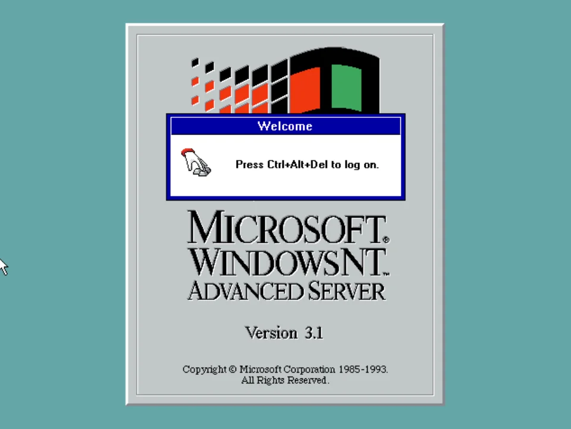
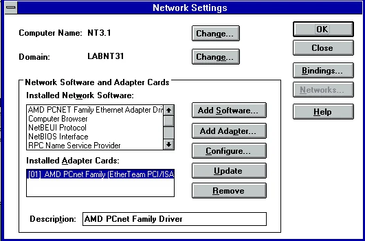
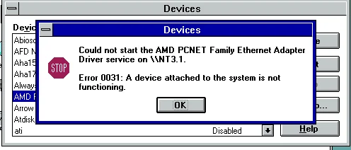
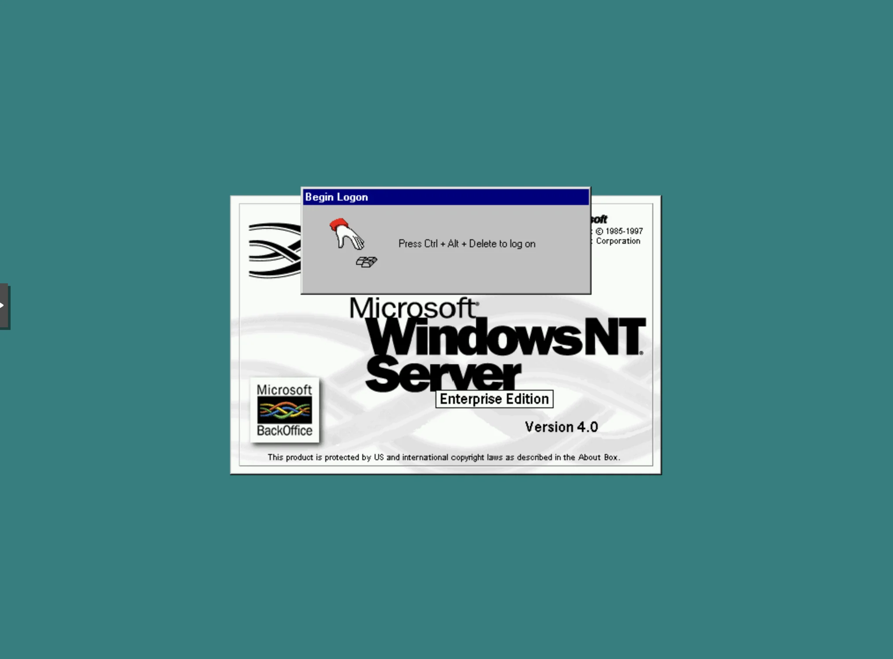
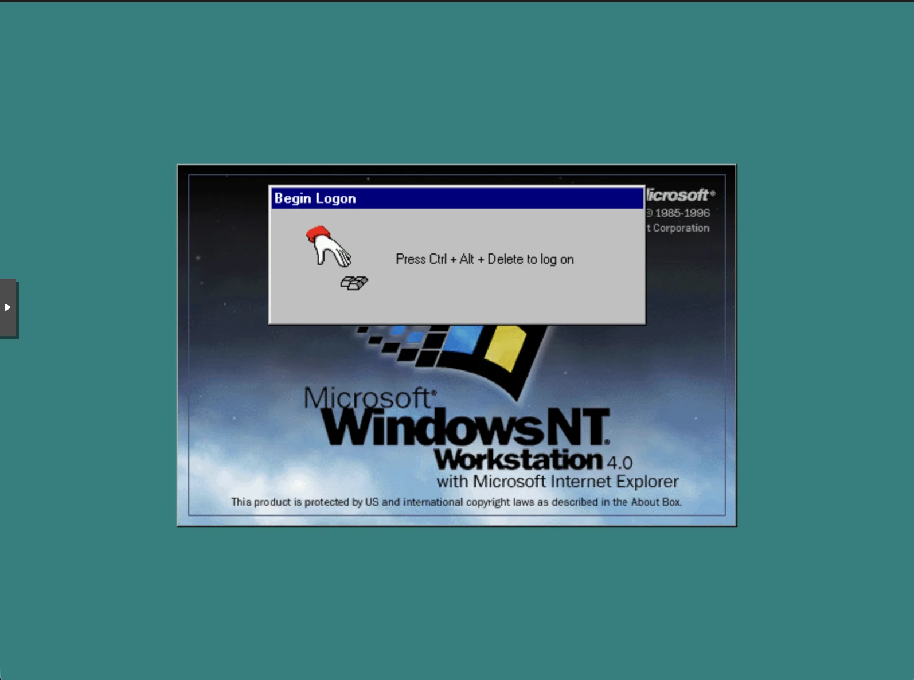
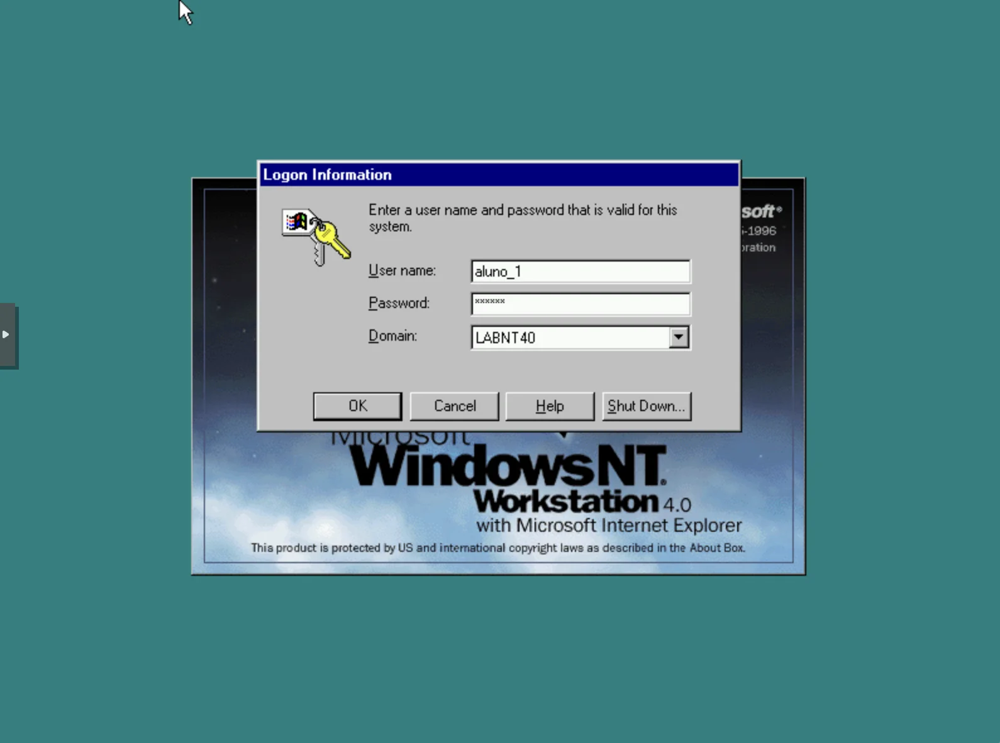
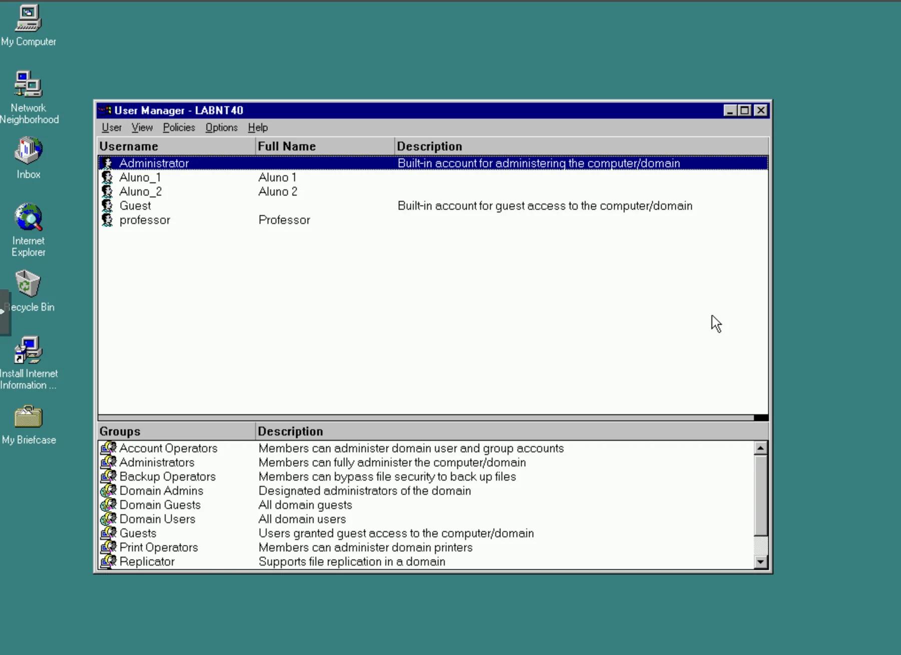
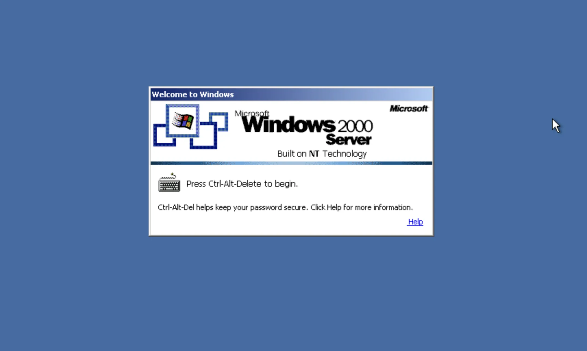
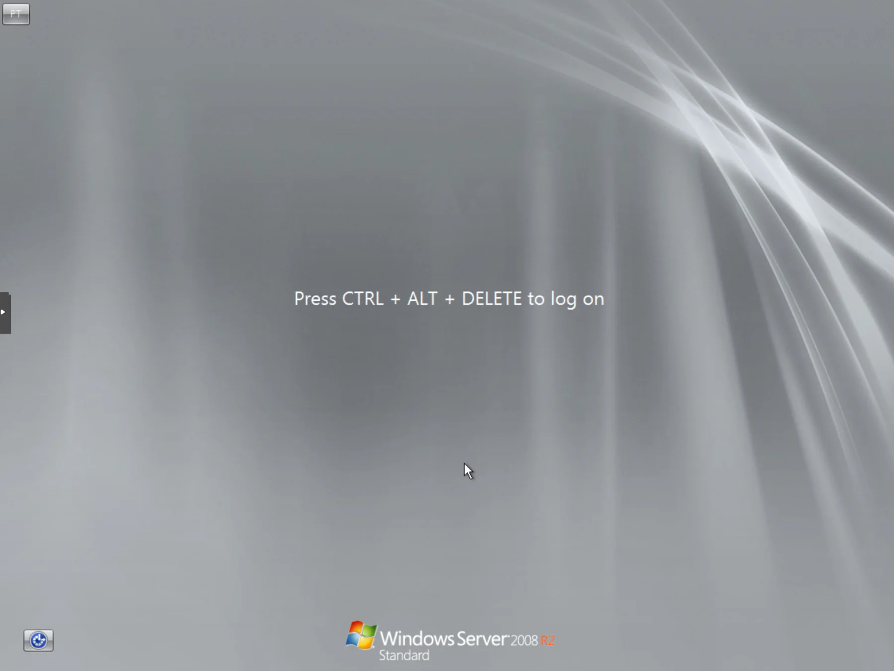

Nem todas as experiências precisam de começar com o sistema operativo mais recente. Uma das partes mais interessantes deste laboratório é recuperar versões que marcaram uma época e fazê-las arrancar novamente num ambiente de virtualização atual. O Windows NT 4.0 é um bom exemplo: tem uma interface familiar para quem utilizou computadores nos anos 90, mas foi criado para máquinas e periféricos muito diferentes dos atuais.
Windows NT 3.1 Advanced Server
23 disquetes depois, o Windows NT 3.1 Advanced Server ficou instalado! A VM 1301 arrancou no Proxmox com CPU 486, 64 MB de RAM e disco IDE. A instalação exigiu alguma paciência, como seria de esperar de um sistema desta geração.
A placa AMD PCnet deu mais luta: conseguimos instalar o controlador a partir de uma disquete virtual e associar a VM à vmbr70, mas o controlador não arrancou corretamente e o TCP/IP ficou indisponível. A rede fica para outro dia. O objetivo desta sessão — instalar e arrancar o NT 3.1 — foi alcançado.



Windows NT 4.0 — instalação, rede e domínio
O conjunto das experiências com o NT 4.0 está reunido aqui: as máquinas Server e Workstation, a instalação da placa de rede a partir de disquete e a administração de contas no domínio LABNT40.


Quando o driver vinha numa disquete
Instalar o sistema operativo foi apenas parte do trabalho. Para colocar a rede a funcionar, foi necessário procurar um controlador compatível com o hardware virtual apresentado à VM. E aqui surgiu uma pequena viagem no tempo: o Windows NT não tinha os mecanismos de deteção e instalação automática de drivers a que estamos habituados hoje.
A solução passou por preparar uma imagem de disquete virtual com o driver, associá-la à máquina virtual através do Proxmox e indicar ao Windows NT onde procurar o controlador. Era uma forma de simular, com ferramentas atuais, o processo que se fazia com disquetes físicas. Assim, o sistema antigo pôde obter os ficheiros de instalação sem depender de uma drive real.
Uma dificuldade que se transforma em aprendizagem
- Escolher o hardware virtual: um sistema antigo pode reconhecer apenas certos modelos de placas e controladores.
- Encontrar o driver adequado: a compatibilidade depende do sistema operativo e do dispositivo emulado.
- Criar o suporte de instalação: neste caso, uma imagem de disquete carregada no Proxmox.
- Testar e guardar o resultado: depois de funcionar, um snapshot permite conservar esse ponto de partida.
Domínio LABNT40: utilizadores e autenticação
O Windows NT 4.0 foi mais cooperante, embora a configuração de rede também tenha exigido tempo. A adaptação do hardware virtual e a instalação do controlador Realtek RTL8139 através de disquete fizeram parte da experiência. Depois disso, o laboratório permitiu avançar para os testes de domínio e gestão de utilizadores.
O laboratório inclui um controlador principal de domínio (PDC), um controlador de reserva (BDC) e um cliente Windows NT 4.0 Workstation. No domínio LABNT40 foram configuradas contas como Aluno_1, Aluno_2 e professor.


aluno_1 e domínio LABNT40 selecionados. A captura não mostra por si só o resultado final da autenticação.Controlador principal do domínio NT, onde se fazem as alterações à base de dados das contas.
Mantém uma cópia da base de dados e pode autenticar utilizadores se o controlador principal ficar indisponível, desde que tenha recebido as alterações necessárias.
No ensaio do laboratório foi também testado o funcionamento com um dos controladores desligado, para observar a continuidade da autenticação. O modelo PDC/BDC do NT 4.0 permite essa redundância; um BDC não se torna automaticamente um PDC gravável.
aluno_1 no domínio LABNT40. A sequência completa da autenticação durante a falha de um controlador não está demonstrada nestas duas capturas.Windows 2000 Server e Windows Server 2008 R2
No Windows 2000 Server, a instalação e os testes de autenticação decorreram como previsto. A experiência serviu para continuar a explorar o funcionamento de sistemas de servidor anteriores às versões atuais, sem misturar estas VMs com a rede principal da casa.
O Windows 2000 Server foi instalado e teve o início de sessão testado com sucesso no laboratório. O Windows Server 2008 R2 Standard encontra-se apenas instalado, tendo arrancado até ao ecrã de início de sessão. Ainda não foram criados utilizadores, configurados serviços ou realizados os testes previstos nesse sistema.


No Windows 2000 Server, foram realizados testes de autenticação com sucesso. O Windows 2000 introduziu o Active Directory, cujo modelo de replicação difere do sistema PDC/BDC do Windows NT 4.0.
Esta experiência mostra a verdadeira vantagem de um laboratório virtual: podemos experimentar, errar, voltar atrás e repetir o procedimento sem ocupar um computador antigo nem colocar o sistema principal em risco. A virtualização facilita muito o trabalho, mas não faz desaparecer todas as limitações dos sistemas históricos — e é precisamente aí que se aprende mais.